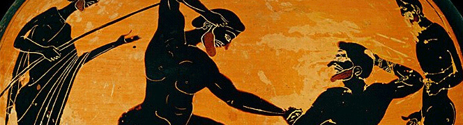

Et si vous défiiez votre idole à son propre jeu ? Pour les Jeux Olympiques de Paris 2024, nous vous proposons de vivre une expérience unique.
Passionné·e de sport et prêt·e à supporter vos équipes et sportifs·ves favoris ? Rejoignez nous pour des challenges et des activités aussi fortes en émotions que les épreuves olympiques.
Des ateliers sportifs et éducatifs se tiendront un peu partout dans la ville de Paris et sa banlieue. Plus d'activités au rendez-vous pour promouvoir différentes valeurs sociales et le bien-être commun. La prévention de l'obésité et de ses conséquences, la mixité sociale, et la visibilité des femmes et des handicapés dans nos sociétés et le milieu sportif sont nos trois priorités durant ces deux mois de MyJO.
My JO (My Jeux Olympiques, c'est-à-dire, Mes Jeux Olympiques) vous propose plusieurs défis selon vos envies, vos passions et votre mental de compétiteur. Les activités physiques tourneront autour des sports représentés aux Jeux Olympiques mais nous ne manquerons pas de vous proposer des activités qui nous sont moins connues en France, des ateliers de découverte au Baseball, Cricket, et Football américain, seront proposés, afin que vous découvriez des sports d'autres régions du monde. Durant ces Jeux Olympiques, tout les regards seront portés sur Paris, alors veillons à offrir une expérience internationnale, amicale et fair-play à tous. Ainsi toutes les activités seront encadrées par des professionnels, avec quelquefois la visite de sportifs de haut niveau pour créer des rencontres inoubliables. Sportifs·ves ou non, tant que la passion vous anime, vous serez les bienvenu·es !
L'histoire des Jeux remonte à l'Antiquité et prend ses racines en Grèce dans le Péloponnèse. Des concours sportifs organisés à Olympie avaient lieu tous les quatre ans et ont pris le nom de Jeux Olympiques. Les raisons exactes de la naissance des Jeux restent aujourd'hui inconnues car l'histoire se mêle à la mythologie. La période de quatre années séparant les éditions de ces Jeux Antiques était nommée "Olympiade" et servait à l'époque de système de datation : le temps ne se comptait pas en années, mais en Olympiades.
Les Jeux olympiques voient en 776 av. J.-C. l'introduction d'une seule épreuve sportive : une course à pied (le stadion) d'une longueur d'un stade (environ 192 m). Corèbe entre dans l'histoire pour être le premier vainqueur de cette première épreuve olympique. Son tombeau se situait à la frontière entre l'Élide et le territoire de la cité d'Iraia.
Le baron Pierre de Coubertin ne mesurait qu'1,62 m, mais il fut, par bien des aspects de sa personnalité, l’un des géants du XXe siècle. Né le 1er janvier 1863 dans une famille de l’aristocratie française, il devint à l’âge adulte un fervent défenseur de l’homme de la rue, embrassant les valeurs de la Troisième République de son pays, la France, valeurs rappelées dans la devise de cette dernière : « Liberté, Égalité, Fraternité ». Il lance son projet de rénovation des Jeux Olympiques et en 1896 a lieu la célébration des 1ers Jeux de l'ère moderne, à Athènes.
En 1900, les Jeux Olympiques sont organisés en parallèle de l'Exposition universelle et s'étalent sur plusieurs mois. Les femmes, certes peu nombreuses, participent néanmoins pour la première fois aux compétitions olympiques. L'équitation ou le golf entrent au programme... À cette ocasion, plusieurs infrastructures sont construites ou aménagées pour accueillir l'évènement comme le Vélodrome Jacques Anquetil. Les sports aquatiques se font le long de la Seine. Au total 24 nations se présenteront, un total de 997 athlètes dont 22 femmes (2.3% des candidats sont des femmes) dans 85 épreuves.
Charlotte Reinagle Cooper est une joueuse de tennis, britannique. Elle remporte le simple dames des Jeux olympiques de Paris et devient historiquement la première femme à s’adjuger une médaille d’or olympique dans une épreuve individuelle.
En 1924, le comité d'organisation des Jeux Olympiques de Paris innove en créant le premier Village olympique. Cet esprit de pionnier se retrouve dans une autre création inédite : le concours international de sports d'hiver, organisé à Chamonix, et qui seront requalifiés a posteriori comme premiers Jeux Olympiques d'hiver... 44 pays se réunissent avec un total de 3089 atlètes dont 135 femmes (4,4% des participants sont des femmes).
Les 9e Jeux Internationaux de Stoke Mandeville, que l'on considère comme les premiers « Jeux Paralympiques »* se tiennent à Rome six jours après la clôture des Jeux Olympiques. Les participants pour la plupart sont d'abord des anciens combattants.
Ce que l'on espère pour ses jeux, c'est encore plus de records battus, des sportifs·ves du monde entier qui mettent de côté les conflits géopolitiques pour nous offrir un spectacle fair-play, de cohésion internationnale. Ces JO seront un rappel pour l'humanité que le changement, le dépassement de soi, et la réalisation de ses rêves ne tiennent qu'à nous. C'est à nous de faire le premier pas. Il peut se révéler difficile et c'est pour ça que MyJO tient à vous accompagner dans cette tâche. Faisons ensemble. Et ensemble nous irons plus vite, plus loin, plus fort.